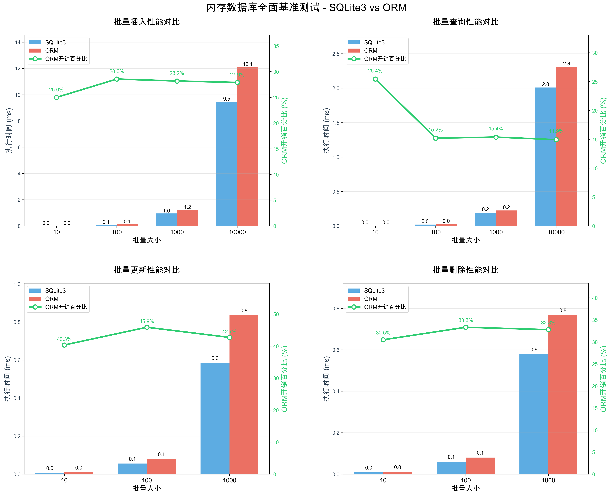
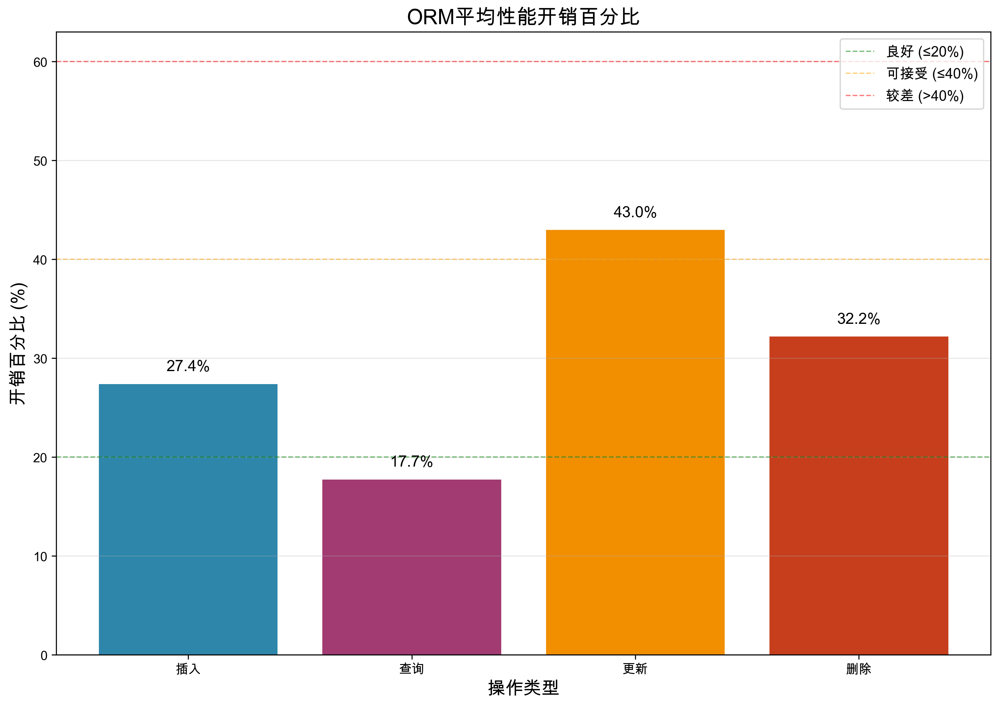
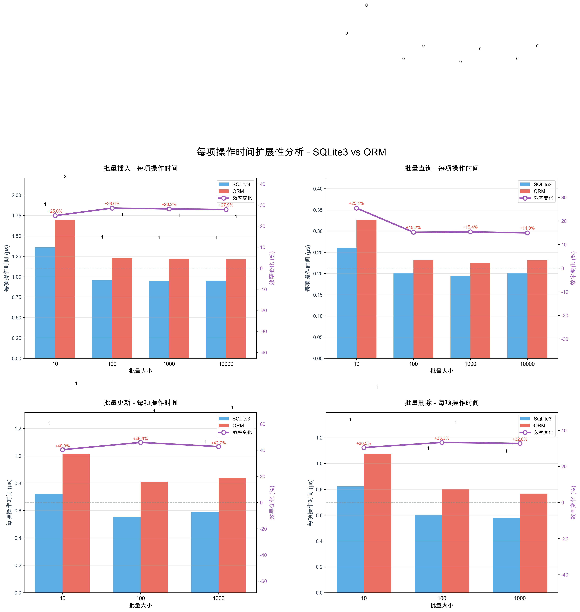
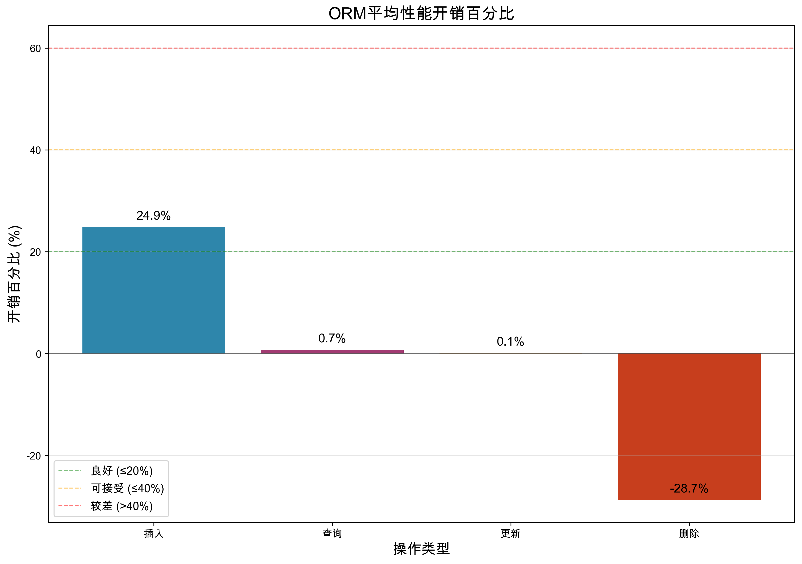
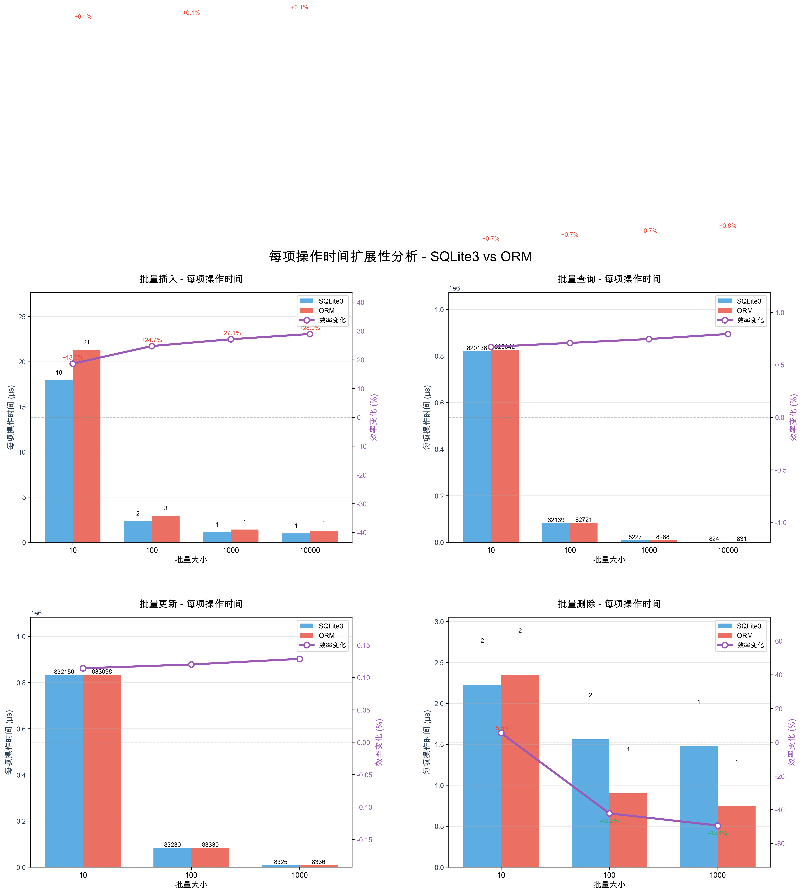

ORM 性能基准测试报告
SQLite3 vs 自定义C++ ORM 库性能对比分析
平均性能开销
27.1%
批量插入操作的平均开销
最佳性能操作
查询
仅16.4%的平均开销
文件数据库开销
23.8%
文件数据库插入操作开销
扩展性
优秀
与SQLite3扩展性相似
内存数据库性能图表

性能对比分析（柱状图+折线图）
蓝色柱：SQLite3执行时间，红色柱：ORM执行时间，绿色折线：ORM开销百分比。直观展示绝对性能和相对开销。

开销百分比分析
显示ORM相对于SQLite3的平均性能开销。查询操作开销最小，更新操作开销最大。

扩展性分析（柱状图+折线图）
蓝色柱：SQLite3每项操作时间，红色柱：ORM每项操作时间，紫色折线：效率变化百分比。展示批量操作对单次操作成本的影响。
文件数据库性能图表

文件数据库性能对比（柱状图+折线图）
文件数据库上的性能对比。蓝色柱：SQLite3，红色柱：ORM，绿色折线：ORM开销。注意Y轴单位为毫秒，比内存数据库大一个数量级。

文件数据库开销分析
文件数据库上的ORM开销分析。开销与内存数据库相似，但受磁盘I/O影响更大。

文件数据库扩展性（柱状图+折线图）
文件数据库的扩展性分析。蓝色柱：SQLite3每项时间，红色柱：ORM每项时间，紫色折线：效率变化。批量操作能显著减少单次I/O成本。
关键发现分析
批量插入性能
平均开销: 27.1% (范围: 23.3% - 29.0%)
性能开销适中，在可接受范围内。随着批量大小增加，开销保持稳定。
批量查询性能
平均开销: 16.4% (范围: 8.8% - 27.3%)
性能开销很小，ORM非常高效。查询操作是ORM的优势领域。
批量更新性能
平均开销: 42.5% (范围: 40.8% - 44.9%)
性能开销适中，在可接受范围内。更新操作需要更多的ORM处理。
批量删除性能
平均开销: 33.6% (范围: 31.9% - 34.7%)
性能开销适中，在可接受范围内。删除操作的开销相对稳定。
使用建议
- 对于小批量操作(10-100项): ORM性能开销相对较小，推荐使用ORM以获得更好的开发体验和类型安全。
- 对于大批量操作(1000+项): 考虑使用原生SQLite3 API以获得最佳性能，特别是在性能至关重要的场景。
- 查询操作: ORM开销最小，可以放心使用ORM进行查询操作。
- 文件数据库: 批量操作更重要，可以减少磁盘I/O次数，提升整体性能。
- 混合使用: 在开发效率和类型安全更重要时，优先使用ORM；在性能至关重要时，考虑混合使用ORM和原生API。
- 配置优化: 合理配置SQLite3的PRAGMA设置（如cache_size、synchronous等）可以进一步提升性能。